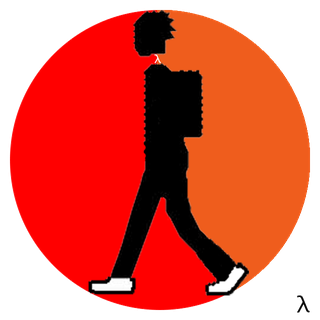

About Me
Table of Contents
关于 Blog
2013-xx-xx
之前在 github 上建了一个博客，文档都放在那边。后来 github 博客偶尔会无法访问，于是在 github 建了一个 git 仓库放置文档，这种方式查看文档不太方便。
2017-04-02
在国内代码托管平台( https://coding.net )基于 hexo 建了这个博客，以后文档可以统一放在这边。
2019-03-01
hexo-org-renderer 没有人再维护了，计划放弃 hexo，尝试了一下 Hugo、org-page，厌倦了切换 blog 插件了，直接使用 org-mode 配套的工具来生成 blog 内容。
2022-05-13
org-mode 这套系统用下来还是很方便的，自从 2019 年之后，就再没折腾了。今天晚上心血来潮，给 blog 换一个和 ReadTheDoc 同款的主题。AboutMe 和 主页还是保持 org-mode 的主题。
- Read The Docs https://github.com/fniessen/org-html-themes
2022-09-07
支持一下评论系统。主题切回 worg.css，同时支持一下页面全屏布局。
2022-11-33
最近离职后，有时间再折腾一下我的笔记系统。全面切换到 org-roam (https://www.orgroam.com/)，增强了对笔记的索引，还可以导出笔记的网络。

另外，笔记仓库再次切换回 github，实在无法忍受 gitee 各种审核。
关于我

我是一名普通的程序员，主要做游戏客户端开发。你可以在下面的地方找到我的身影。
Blog: https://wolfand11.github.io
Zhihu: https://www.zhihu.com/people/wolfand11
Github: https://github.com/wolfand11
请我喝杯咖啡 (^_^)